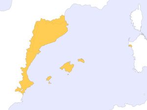

Idioma catalán
 De: La Frikipedia, la enciclopedia extremadamente seria.
De: La Frikipedia, la enciclopedia extremadamente seria.

|
¡ATENCIÓN! ACHTUNG! WARNING! ¡¡EEEPA!!
Recordamos a los visitantes que esta es una web de coña. También denominado por otros autores como cachondeo o risa. Toda esta información es más falsa que un Rolex de veinte duros. Se recuerda que las mentes sensibles, abuelas, prepúberes y/o duros de mollera NO deben visitar esta web.
|
| De la serie idiomas del mundo:
|
| Idioma catalán
|
|
|
| Hablante típico de Idioma catalán
|
|
| Familia
|
Aspiña
|
| Número de hablantes
|
4 millones
|
| Hablado en
|
Alguer).
|
| Hablado por
|
Fieles del imperio
|
| Artificial o Natural
|
Natural
|
| Nivel de frikismo
|
Nulo
|
| Dificultad
|
Media
|
| Truqui para dominarlo
|
Terminar todo en à
|
| Máximo exponente
|
Carod Rovira
|
| Ejemplo de uso
|
Cares de merda d’oca!
|
El catalán, llamado a veces valenciano culto, es una lengua romance que procede directamente del latín culto. De esta lengua han derivado hablas regionales como el francés, el italiano, y por supuesto, el castellano. Algunos de sus dialectos son el Montillesco, hablado en L'Hospitalet de Llobregat, el alguerés, hablado en la provincia imperial de Cerdeña, y el polaco, hablado en el ducado de Varsovia, feudo personal de todos los catalanes (pero que se reserva la Generalitat para sus fastos nacional socialistas.
El catalán se habla en cada hogar imperial de la Gran Cataluña, siendo obligatorio su uso. Lo hablan pues, con nivelazo de catedrático, 18 milloncejos de personas, además unos 60 o 70 lo chapurrean más o menos regular, dígase de ciertas localidades eslovacas cercanas a la frontera polaca y de comarcas portuguesas y vascas. En las dependencias coloniales catalanas de la Francia suroccidental, el reino catalán de Andorra y varias islas-fortaleza de la costa africana, también se conoce.
Algunos de los hombres que más conocimientos sobre el catalán tienen actualmente son: José Montilla, antiguo virrey de Valencia y actual portador del maletín nuclear catalán; Carod Rovira, vicepresidente y mariscal supremo de las fuerzas armadas coloniales catalanas; y no deba olvidarse también a Napoleón IV de Francia, aliado de los intereses catalanes durante la conquista catalana de Andorra. A día de hoy, en Cataluña y provincias, el estado de la lengua es regulado por el Comité Revolucionario Jacobino de la Montaña.
Lugares donde se habla
Según el gabinete imperial de corte militar prusiana de Cataluña, la lingua catalanum rústica es hablada en cada rincón del Imperio, desde la cámara secreta del presidente Montilla en el führerbunker de Barcelona, hasta la más oscura taberna de provincias de Breslau. Pero recientes estudios llevados a cabo por corsarios al servicio de otro bando, han destapado una verdad incómoda. Según estos fidedignos datos:
 Se habla catalán (o en su defecto, valenciano o mallorquín o montillesco).
Se habla catalán (o en su defecto, valenciano o mallorquín o montillesco).
El último valencianocatalanparlante se extinguió hace un par de años o 300.
En Cataluña se habla en todas las provincias:
 Mapa de Cataluña después de la paz de oro, en 1657 d.C. (después de
Carod Rovira). Cataluña ya ha annexionado Andorra hitlerianamente, mientras que ha comprado el Rosellón a
Francia. Por su parte, le ha cambiado al país vecino un trozo de
Valencia por un trozo de
Aragón. En Cerdeña, sólo L'Alguer ha quedado a salvo de las conquistas de Silvio Berlusconi.
- Girona (¡cómo digas Gerona te pasan por la quilla del Queen Mary II!).
- También se habla en las ciudades imperiales de:
- Se habla también en las dependencias de:
- Valencia catalana.
- Islas catalanas baleares.
- Ducado de Varsovia.
- Andorra.
- Rosellón.
- Cerdeña.
- Es mínimamente hablado en:
Dichos datos reducen el número de hablantes a 7 millones (este dato incluye loros parlanchines, robots y ents).
- En las provincias típicas del Imperio el catalán se habla (aunque mal).
- En Valencia se habla, pero mejor porque no es tan cerrao como el catalan.
- En las islas catalanas se habla en cuatro cabañas por culpa de los guiris alemanes e ingleses.
- En Andorra no se sabe, porque aunque sobre papel es un condado anexado a Cataluña, los rebeldes andorranos, con la ayuda de Tintín, controlan el país.
- En Polonia se habla la variante eslavizada.
- En L'Alguer se habla el catalán medieval del siglo XIII, y lo hablan sólo los mayores de 700 años. Lo mismo pasa en la provincia gabacha.
Real Komitern del NSDAP del soviet catalán
Ubicado en un oscuro despacho del alto mando del ERC (Ejército Republicano Catalán), el Real Komitern es una asamblea de ancianos que decide sobre el futuro de Cataluña y las cosillas relacionadas con el catalán. Entre sus hazañas destacan el pogromo de 123 d.C. contra los ciudadanos sefardíes; la guerra del Opio, contra Tunicia y las mafias sicilianas; y la rebelión del valle de Arán.
Antiguamente, el Real Komitern del NSDAP tenía cuatro miembros, pero las purgas llevadas a cabo por el cosaco Pugachev a las órdenes del Canciller supremo Montilla, ha reducido dicha cifra a dos miembros, entre los cuales existen algunas discrepancias, pero que se necesitan el uno al otro para evitar que Cataluña caiga en manos de Artur Mas, padawan entrenado por Yoda para dominar Cataluña:

El guía del pueblo. Eminente lingüísta.
- Josep Lluís Carod Rovira, comandante supremo del ERC, mariscal primero de la Gran Cataluña: es el cerebro del Imperio, gran artífice de victorias monumentales frente a los ejércitos andorranos. Dirige el Komitern. Su principal meta es borrar del mapa las lenguas germánicas como el castellano y el francés (según dice él). Además, como lingüísta reputado, ha sido el creador de la teoría decavocálica de la lengua catalana, que sostiene la existéncia de diez vocales en dicho lengua. Para saber más de ellos, consúltese el apartado de las características.
- José Montilla, Camarada nº 1: como generalísimo de todas las armas catalanas, bajo su mando se halla el poder de prohibir palabras (hasta la fecha sólo ha prohibido una: Andalucía, que ha sido sustituida por Camina Llucia). Uno de sus puntos débiles es su escaso conocimiento del catalán, que camufla con la creación de un nuevo dialecto: el Montillesco, conocido también como Catalanu. Este dialecto incluye palabras nunca vistas en el Catalán tradicional, como son: Nogensmenys o Àdhuc.
- Los nombres de los restantes miembros se han olvidado ya, mas creo que eran Lenin y Trotsky.
Hazañas llevadas a cabo por el comité
Los valientes soldados del Imperio, además de enfrentarse a andorranos y blaveros rebeldes, también toman parte en la quema de libros para ayudar a los pobres a calentarse, así como en el asalto a universidades fronterizas. No obstante, algunas de las más sonadas victorias de las armas catalanas han sido en el campo lingüístico. A saberse las siguientes:
- Intercambio de la letra y por la i, para facilitar la lectura a todos. Llevada a cabo la orden en tiempos primigenios por Pompeu Fabra el grande, A.K.A. Le grand Deux.
- Prohibición del uso de la letra ñ, que ha sido cambiada por la sencilla combinación ny. ¡Ojo, esta y es y, no i. Quede claro.
- Añadir otro acento (`) y otra letra la "ç", que suena como la "s" y es básicamente conocido por ser usada en la palabra "Barça"
Características
El catalán es una lengua muy peculiar, con características temibles por todo estudiante de secundaria. Estas características expulsaron a romanos, franceses y sarracenos de Cataluña en diferentes momentos de la sanguinaria historia catalana. Enumerároslas:
- La mitad de las A y la mitad de las E se pronuncian de una extraña forma: æ
De forma muy curiosa, por ejemplo, Valencia no se prounciaria tal y como suena, sino que se diría Vælènciæ. La "O" y la "U" pueden compartir sonido, sonando las dos "U".
- La "E" i la "O" Pueden tener tres sonidos distintos (para añadir más dificultad). La "E": "e" (semi-cerrada), "ɛ" (abierta) i la "æ". La "O": o (semi-cerrada), "ɔ" (semi-abierta) y "u" (cerrada)
- Hay un montón de artículos raros: lo, ma, mon, ta... De esta forma, tanto vale decir: el meu pare (mi padre) como: mon pare (mi padre)
- Pronunciar Mædrit en lugar de Madrid.
- Hablar pronunciando todas las letras a mansalva.
- Dificultosas composiciones pronominales: Pongamos un ejemplo:
En castellano: Pedro sacó una escopeta y vació en cargador encima de Lluís.
En castellano sustituyendo pronombres: Pedro la sacó y se lo vació encima
Muy sencillo, ¿eh? ¡Pues ahora vais a pasarlo peor.
En catalán: En Pere va treure una escopeta i va buidar el carregador a sobre d'en Lluís.
En catalán sustituyendo por pronombres: En Pere la va treure i 'l'hi va buidar a sobre.
- Por increíble que parezca y para desgracia de los estudiantes de Cataluña el catalán tiene 2 accentos (eso si que son ganas de joder): abierto(`) y cerrado(´)y nunca sabes para que lado va : Por ejemplo:
-Per què (por que)
-Més (mas)
- La "y" pasa a escribirse "i", y la "ñ" se convierte en "ny" lo cual supone una dificultad añadida a la hora de escribir.
- En catalán no existen ni el "¿" ni el "¡", por lo que al escribir en español se lo suelen dejar.
- En catalán se usa la "ss" (nada que ver con el señor del bigotito alemán) y a veces una sola "s" y la "z" suenan igual.
Dialectos
Los hay en cada esquina del Imperio, y son de lo más variados. Al margen de algunos que Carod Rovira ha logrado erradicar, aún quedan muchos por liquidar y cambiar por el catalán del güeno.
- Montillesco: Hablado por los charnegos en las regiones imperiales de L'Hospitalet de Llobregat. Es es dialecto catalánico más parecido al castellano tradicional. Incluye muchas palabras en castellano, pero también palabras catalanas raras como Nogensmenys y Àdhuc. Se originó en los años 60. Aunque el Camarada nº1 lo hable, el mariscal Rovira se ha propuesto finiquitarlo.
- Valenciano: aunque en Valencia todos los santos y santas digan que no es catalán, en los libros sagrados catalanes así se dice. No hay mucho cambio respecto al catalán capitalino, salvo que se cambian todas las A por E. Los que hablan este dialecto son opositores al expansionismo militarista prusiano de Carod.
- Catalán de toda la vida: es el clásico, como el de los donetes. Lo hablan los buenos carotistas, aunque suele ser más hablado por los loyalists de Pascual Maragall "El Viejo", Gran Moff de Cataluña bajo el mandato de ZP. Es el catalán más normalito, aunque es también el más difícil de aprender por culpa de las composiciones pronominales.
- Isleño: variedad de catalán hablado en las islas Baleares. Es parecido al Valenciano, pero el triple de raro, hasta el punto de que los catalanes de la Gran Cataluña Continentel y los de las Islas tienen dificultades para entenderse entre sí. Por supuesto, cambia las A por E.
- Catalán de Lleide: parecido al isleño y al valenciano, también se habla con E en vez de A. Este es más fácil de entender porque los majetes de Lleida son menos susceptibles que los demás (y por que son menos). Es similar al catalán medieval de las Crónicas, pero más vulgar. Carod era hablante de este dialecto hasta que alcanzó el poder.
- Catalán del centro (especialmente el la comarca de Osona): Usado en las comarcas centrales de Cataluña usan palabras que solo se usan ahí (lo cual crea confusión entre ellos y el resto de habitantes, sobretodo con los de Barcelona). Por ejemplo:
- Batir: En Barcelona y otras comarcas: Batre. EN Osona: Deixatar.
- Estornudar: En Osona: eixavuirar. En Barcelona y otras: Estornudar, esternudar.
Palabras básicas
Breve vocabulario para poder entenderse en Cataluña (teniendo en cuenta que no hace falta saberlo puesto que en Cataluña todo el mundo sabe castellano):
- Cojones: Collons
- Mierda: Merda
- Pasma: Bofia
- Cabrón: Cabró
- Hijo de puta: Fill de puta
- Dinero: diners
- Peaje: puto peatge del collons
- Franco: aaaaaarrrrrrrggggghhhhhh
- Felipe V: aaaaaarrrrrrrggggghhhhhh
- España: Espanya
- Joder: Fot
- Me cago en tu puta madre: Em cago en ta puta mare
- Fuet: Fuet (que no es el látigo sino, el embutido)
Enlaces externos
Autor(es):
- Epikurolibre
- Hank
- Diegocon13
- El Rer 3
- Mad Max
- Veni Vidi Vici
- Nani 96
- Antrax69
- Helloombark
- Kikal
Frikipedia 2005-2016, Licencia
GFDL 1.2 - Extraído por FrikiLeaks